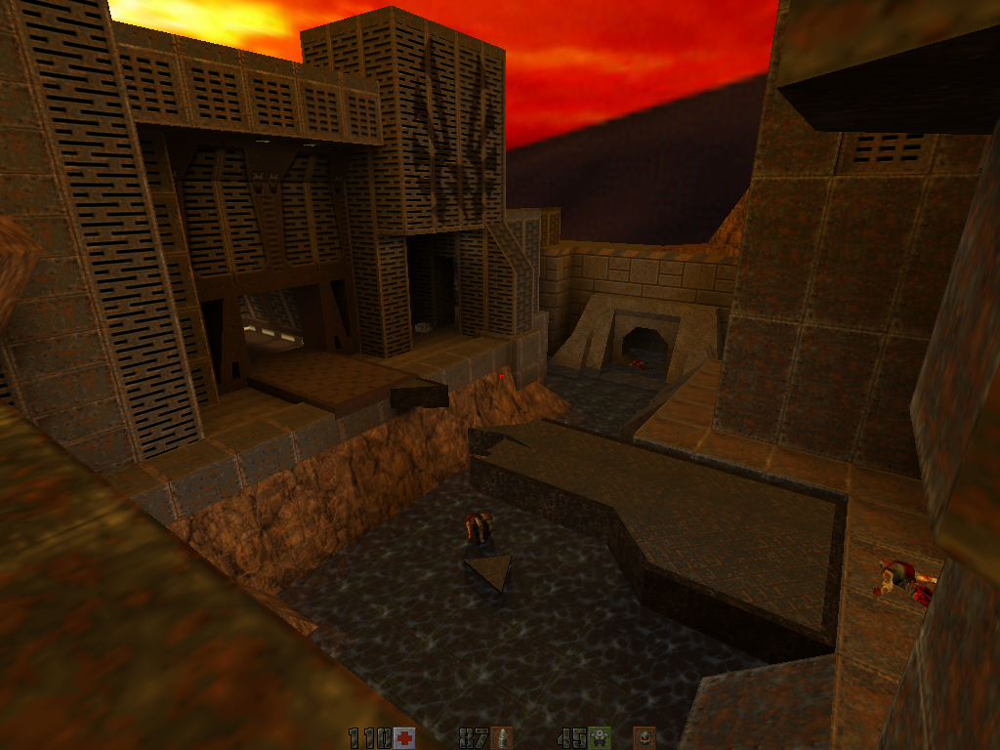

Ранее я уже писал про то, как можно запустить Quake в Linux:
Запуск Quake 3 тоже не представляет проблем, если воспользоваться для этого игрой OpenArena.
Вот чего мне до сих пор не удавалось, так это приличным образом запустить в Debian любимый мной Quake 2, который во времена студенчества мы с тремя моими друзьями перевели на русский язык. Но теперь я нашёл готовые deb-пекеты для установки Quake 2 в Debian: Yamagi Quake II Client
Для установки Quake 2 скачиваем три пакета вот отсюда Debian packages of Yamagi Quake II:
$ wget http://deponie.yamagi.org/quake2/debs/i386/yamagi-quake2_2.11-1_i386.deb $ wget http://deponie.yamagi.org/quake2/debs/all/quake2-data_16_all.deb $ wget http://deponie.yamagi.org/quake2/debs/i386/yamagi-quake2-addons_1.1_i386.deb
И незамедлительно устанавливаем их:
# dpkg -i yamagi-quake2_2.11-1_i386.deb # dpkg -i quake2-data_16_all.deb # dpkg -i yamagi-quake2-addons_1.1_i386.deb
Теперь достаём с полки диск с Quake 2 и копируем содержимое каталога baseq2 в каталог /usr/share/games/quake2/baseq2. Достаточно скопировать только файл pak0.pak:
# cp /cdrom/BASEQ2/PAK0.PAK /usr/share/games/quake2/baseq2/pak0.pak
И запускаем:
$ yamagiq2
Как всегда, без ложки дёгтя в бочке мёда не обходится.
Во-первых, для работы quake2 необходимо наличие в системе пакетов libogg0 (>= 1.1.3), libsdl1.2debian (>= 1.2.10-1), libvorbis0a (>= 1.1.2), libvorbisfile3 (>= 1.1.2), zlib1g (>= 1:1.2.1). Проверяем наличие нужных пакетов и устанавливаем недостающие.
Во-вторых, звук в игре по непонятной мне причине немного заикается и хрипит. Как я ни пытался улучшить звук, ничего особого не получилось. С помощью следующей команды:
$ yamagiq2 +s_khz 44 +s_loadas8bit 0 +snd_restart
Удалось лишь немного улучшить качество звука в те моменты, когда он не заикается и не хрипит. Но заикаться и хрипеть от этого он всё равно не перестал.
И ещё - для запуска игры необходимо наличие видеокарты, поддерживающей аппаратное ускорение OpenGL. Поддержка программной отрисовки из этого пакета была нещадно выпилена.
Из приятного можно отметить следующее:
Для добавления модов скопируем каталоги с модами в соответствующее место, откуда их может взять движок игры.
# cp -R /home/stupin/quake2/Quake2Mods/RecKoning/xatrix /usr/share/games/quake2/ # cp -R /home/stupin/quake2/Quake2Mods/GroundZero/rogue /usr/share/games/quake2/
Теперь для запуска одного из модов можно воспользоваться следующими командами:
$ yamagiq2 +s_khz 44 +s_loadas8bit 0 +snd_restart +set game xatrix $ yamagiq2 +s_khz 44 +s_loadas8bit 0 +snd_restart +set game rogue
Для съёма треков с компакт-диска можно воспользоваться примером скрипта, находящимся в одном из пакетов с игрой: /usr/share/doc/yamagi-quake2/examples/cdripper.sh
Ну и напоследок, снимок на память:
